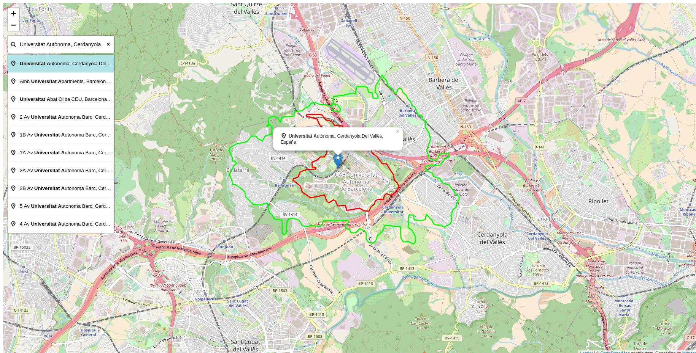

Note
Fecha Autores 8 Noviembre 2017
- Wladimir Szczerban
©2017 Wladimir Szczerban
Excepto donde quede reflejado de otra manera, la presente documentación se halla bajo licencia: Creative Commons (Creative Commons - Attribution - Share Alike: http://creativecommons.org/licenses/by-sa/3.0/deed.es)
Desafortunadamente Mapzen cierra operaciones a finales de Enero de 2018. Por lo tanto el servicio de Isócronas no estará disponible a partir del 1 Febrero de 2018. Podéis ver el anuncio del cierre aquí https://mapzen.com/blog/shutdown/
Mapzen Mobility [1] es un kit de herramientas para el transporte multimodal, está basado en software libre y usa datos abiertos (principalmente datos de OpenStreetMap). Consta de varias herramientas, tales como: - Mapzen Turn-by-Turn: servicio de navegación para el mundo, ya sea en automóvil, en bicicleta, a pie y combinaciones multimodales que combinen andar a pie y el uso del transporte público. - Mapzen Matrix: servicio de cálculo de tabla de distancia y tiempo entre diferentes lugares. - Mapzen Isochrone: servicio para obtener un cálculo de las áreas que se pueden alcanzar dentro de períodos de tiempo específicos desde una ubicación o un conjunto de ubicaciones. - Mapzen Map Matching: servicio que permite convertir una ruta en una ruta con instrucciones narrativas. Esto lo hace observando las coordenadas que coinciden con las coordenadas de las carreteras conocidas y así obtiene los valores de los atributos de esa línea coincidente.
Otro servicio interesante de Mapzen es el servicio de búsqueda que permite geocodificar direcciones ó buscar puntos de interés. [2]
Mapzen tiene una librería Mapzen JavaScript SDK [3] que está basada en Leaflet [4] . Esta facilita el uso de los diferentes servicios de Mapzen. Aquí [5] se puede ver un ejemplo del cálculo de Isócronas utilizando la librería js de Mapzen.
En nuestro caso crearemos un visor utilizando Leaflet y llamando directamente al servicio de Mapzen.
Crear una carpeta con el nombre de visor-mobility.
Crear un archivo con el nombre de index.html dentro de la carpeta.
Abrir el archivo index.html con un editor de texto y copiar el siguiente código.
<!DOCTYPE html>
<html>
<head>
<meta charset="UTF-8">
<meta name="viewport" content="width=device-width, initial-scale=1.0">
<meta http-equiv="X-UA-Compatible" content="ie=edge">
<title>Ejemplo Isócronas Mapzen</title>
<link rel="stylesheet" href="https://unpkg.com/leaflet@1.2.0/dist/leaflet.css" />
<style>
#map {
height: 100%;
width: 100%;
position: absolute;
}
</style>
</head>
<body>
<div id="map">
</div>
<script src="https://unpkg.com/leaflet@1.2.0/dist/leaflet.js"></script>
<script>
var map = L.map('map');
map.setView([41.3887, 2.1777], 13);
L.tileLayer('http://{s}.tile.osm.org/{z}/{x}/{y}.png', {
attribution: '© <a href="http://osm.org/copyright">OpenStreetMap</a> contributors'
}).addTo(map);
</script>
</body>
</html>
Abrir el archivo index.html en el navegador para confirmar que se carga un mapa centrado en Barcelona.
Crear una API key. Al revisar la documentación de la API del servicio de Mapzen Isochrone [6] vemos que es necesario tener una API key para poder utilizarlo. Para crear la API key hay que darse de alta en la página de Mapzen [7], esta tiene una versión gratuita que tiene unas cuotas de uso. Si se quiere hacer un uso más intesivo del servicio hay que pagar.
Crear una variable donde guardaremos nuestra API key. Escribir antes de la declaración de nuestro mapa
var API_KEY = '{TU_API_KEY}';
Cargar la respuesta GeoJSON del servicio utilizando el plugin de Leaflet llamado leaflet-ajax [8]. Este plugin permite hacer una llamada AJAX a un servicio que retorne un JSON y cargar la respuesta en un mapa. Agregar lo siguiente justo después de donde cargarmos el leaflet
<script src="https://calvinmetcalf.github.io/leaflet-ajax/dist/leaflet.ajax.js"></script>
Agregar una capa de Isócronas al mapa llamando a la API de Mapzen utilizando el plugin. Agregar lo siguiente al final de nuestro código :
var geojsonLayer = new L.GeoJSON.AJAX('https://matrix.mapzen.com/isochrone?json={"locations":[{"lat":41.40024,"lon":2.180442}],"costing":"pedestrian","contours":[{"time":15,"color":"ff0000"}]}&api_key=TU_API_KEY').addTo(map);
Recargar el mapa y comprobar que aparece una línea azul que representa la isócrona del punto dado. En este caso el punto seleccionado es fijo y está escrito en nuestro código.
Modificar la aplicación para que se haga el cálculo de la Isócrona cuando el usuario haga click en un punto del mapa. Para ello primero hay que detectar el evento click en el mapa. Escribir luego de donde declaramos la capa geojson
map.on('click', function(e){
console.log(e);
});
Recargar la aplicación y abrir la consola del desarrollador. Hacer click sobre el mapa y ver que en la consola aparece el objeto del evento click. Inspeccionar este objeto y ver que tiene una propiedad llamada latlng que contine las coordenadas donde se ha hecho el click.
Crear una función que tenga como parámetro una posición (coordenada lat lon) y genere una url de llamada al servicio de isócronas de Mapzen para que haga el cálculo en la coordenada indicada. Copiar lo siguiente al final de nuestro código:
function crearUrlIsochrona(latlng){
var lat = latlng.lat;
var lng = latlng.lng;
var url = 'https://matrix.mapzen.com/isochrone?json=';
var json = {
locations: [{"lat":lat, "lon":lng}],
costing: "pedestrian",
contours: [{"time":15,"color":"ff0000"}]
};
url += escape(JSON.stringify(json));
url+= '&api_key='+API_KEY;
return url;
}
Llamar a la función crearUrlIsochrona cuando se hace click en el mapa. Escribir al final de la función del click
var url = crearUrlIsochrona(e.latlng);
console.log(url);
Recargar la página y hacer click sobre el mapa para ver que en la consola aparece una url. Abrir esta url en el navegador para comprobar que responde con un GeoJSON que contiene la isócrona.
Utilizar el método refresh para actualizar la capa geojsonLayer con la nueva url. Escribir debajo de donde declaramos la variable url
geojsonLayer.refresh(url);
Refrescar el mapa y hacer click sobre el mapa para comprobar que se dibuja una nueva línea isócrona.
Modificar la capa geojsonLayer para que se inicialice vacía sin ningún elemento. Modificar la declaración de la capa y borrar la url que llama a la API de Mapzen. Quedaría así:
var geojsonLayer = new L.GeoJSON.AJAX('').addTo(map);
Pintar la línea del color que indicamos. Por defecto se pinta la línea de color azul a pesar de que en la llamada a la API estamos diciendo que el color es rojo (ff0000). Esto es debido a que el Leaflet no sabe de que color pintar la línea y utiliza el color por defecto. En la respuesta del servicio podemos ver que los elementos que nos retorna tienen unas propiedades (properties) en donde se listan una serie de estilos, uno de ellos es el color que si corresponde con el rojo. Lo que debemos hacer es decirle al leaflet que utilice esa propiedad para dar el color a la línea. Escribir lo siguiente en nuestra capa geojsonLayer.
var geojsonLayer = new L.GeoJSON.AJAX('',{
style: function(geoJsonFeature){
return {color: geoJsonFeature.properties.color};
}
}).addTo(map);
Recargar el mapa y hacer click para confirmar que la línea es de color rojo.
Calcular también la isócrona de 30 minutos. Hasta el momento pedíamos una isócrona de 15 minutos. Modificar el parámetro contours de nuestra función. Agregar otro objeto a la matriz de countours en este caso el tiempo (time) será de 30 y la línea será de color verde. Quedaría de la siguiente forma:
contours: [{"time":15,"color":"ff0000"}, {"time":30,"color":"00ff00"}]
Recargar el mapa y comprobar que ahora al hacer click aparecen 2 isócronas.
Para agregar un buscador utilizaremos el plugin de Leaflet Leaflet.OpenCage.Search [9] desarrollado por OpenCage que permite de una forma fácil y rápida hacer llamadas al servicio de búsqueda de OpenCage Geocoder.
Cargar la librería en nuestra aplicación. Copiar lo siguiente justo despúes de la carga del plugin de leaflet.ajax
<script src="http://rawgit.com/opencagedata/leaflet-opencage-search/master/dist/js/L.Control.OpenCageSearch.dev.js"></script>
Cargar el estilo del plugin. Escribir lo siguiente justo debajo de donde cargamos el estilo de Leaflet
<link rel="stylesheet" href="http://rawgit.com/opencagedata/leaflet-opencage-search/master/dist/css/L.Control.OpenCageSearch.dev.css" />
Agregar el control al mapa. Para utilizar el servicio de búsqueda también es necesario pasar nuestra API key. Agregar lo siguiente antes de la declaración de nuestra función crearUrlIsochrona :
var options_g = {
key: '{TU_API_KEY_OPENCAGE}',
limit: 10
};
var geocoder = L.Control.openCageSearch(options_g).addTo(map);
Recargar el mapa y comprobar que aparece el control.
Calcular las isócronas al seleccionar un resultado de la búsqueda. Modificar la función _geocodeResultSelected del control geocoder
geocoder._geocodeResultSelected = function(result){
if (this.options.collapsed) {
this._collapse();
}
console.log(result);
};
Refrescar el mapa y abrir la consola de desarrolladores para comprobar que al seleccionar un resultado de la búsqueda aparece un objeto en la consola. Inspeccionar este objeto para ver que tiene una propiedad latlng que es lo que necesitamos para calcular las isócronas.
Llamar a nuestra función crearUrlIsochrona en la función del evento select para generar la url, luego refrescar la capa de geojsonLayer. Esto ya lo hemos hecho cuando el usuario hace click en el mapa. Copiar lo siguiente en la función
var url = crearUrlIsochrona(result.center);
geojsonLayer.refresh(url);
Refrescar la página y al seleccionar un resultado de búsqueda comprobar que calcula las isócronas desde ese punto.

Utilizaremos el servicio de la API de Iso4App [10] que también está basado en datos de OSM.
Crear una función que tenga como parámetro una posición (coordenada lat lon) y genere una url de llamada al servicio de isócronas de Iso4App para que haga el cálculo en la coordenada indicada. Copiar lo siguiente al final de nuestro código:
function crearUrlIsochrona2(latlng){
var lat = latlng.lat;
var lng = latlng.lng;
var url = 'http://www.iso4app.net/rest/1.3/isoline.geojson?&type=isochrone';
url+= '&value='+60*15;
url+= '&lat='+lat+'&lng='+lng+'&mobility=pedestrian'
url+= '&licKey={TU_API_KEY_ISO4APP}';
return url;
}
Modificar la función que se llama al seleccionar un elemento del resultado de la búsqueda del geocodificador. En lugar de llamar a la función crearUrlIsochrona llamar a la nueva función crearUrlIsochrona2.
Recargar la página y hacer click sobre el mapa para comprobar que se llama al servicio de Mapzen y se pintan dos isócronas.
Hacer una búsqueda en el geocodificador y seleccionar un resultado para comprobar que se llama al servicio de Iso4App y se pinta una isócrona.
| [1] | https://mapzen.com/documentation/mobility/ |
| [2] | https://mapzen.com/products/search/geocoding/ |
| [3] | https://mapzen.com/documentation/mapzen-js/ |
| [4] | http://leafletjs.com/ |
| [5] | https://bl.ocks.org/rfriberg/38694be3e8ffb30ac6ac8302960c7ebd |
| [6] | https://mapzen.com/documentation/mobility/isochrone/api-reference/ |
| [7] | https://mapzen.com/developers/sign_up |
| [8] | https://github.com/calvinmetcalf/leaflet-ajax |
| [9] | https://github.com/OpenCageData/leaflet-opencage-search |
| [10] | https://www.iso4app.net/ |